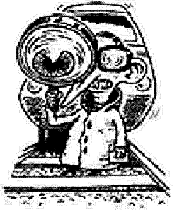

|
I Claim A Trainspotter! In ish 2 of YS3, you stated on the letters page that you had installed - and was now using - Linux. However, in the Joystick Jugglers section you stated that it was Windows you stuck with. I claim a trainspotter award! Chris Young, via e-mail I was wondering how long it'd be before someone tried to claim one of these... Now then, no magazine is written in a day. Not even this one. And the way I write things, I start with Jugglers, and finish with Letters (giving people the maximum time possible to write to us). Now, when I wrote Jugglers, I had indeed given up and returned to the dark side. However, by the end of the month, when I was writing Letters (or rather the replies, ahem), I'd had another go and somehow persuaded Linux to work. Hence the triumphant anti-Bill rant. If we'd claimed it was all written at once, then it would have been a mistake. It just shows how our lives can evolve over the course of a few weeks. Or something. Anyway, no trainspotter. |
 |